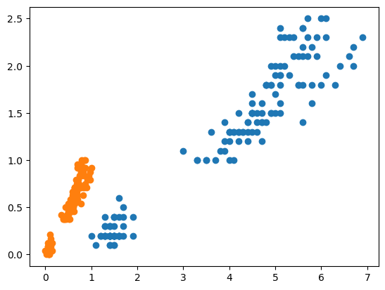
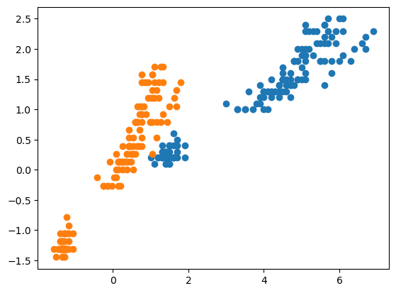
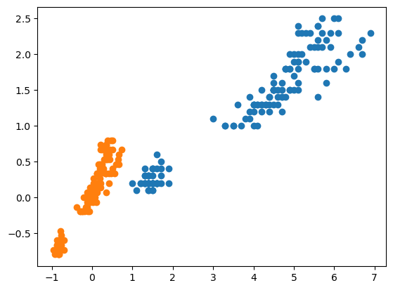
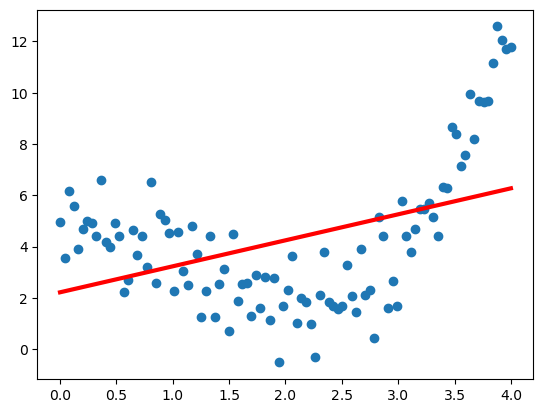
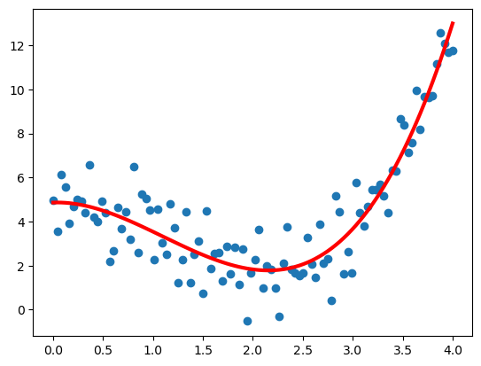

Sklearn : Pre-processing
Dans ce chapitre, nous allons explorer les outils de prétraitement de données offerts par Scikit-learn. Nous aborderons des techniques d'encodage, de normalisation, de création de caractéristiques polynomiales, de discrétisation, et nous verrons comment les intégrer efficacement dans des pipelines pour optimiser vos workflows de machine learning.
Sommaire :
- Chapitre 1 : Encodage
- Chapitire 2 : Normalisation
- Chapitre 3 : Polynomial Features
- Chapitre 4 : Discretisation
- Chapitre 5 : Pipelines
1. Encodage
Encodage LabelEncoder et LabelBinarizer
import numpy as np
import matplotlib.pyplot as plt
from sklearn.preprocessing import LabelEncoder, LabelBinarizer, OrdinalEncoder, OneHotEncoder
y = np.array(['chat', 'chien', 'chat', 'oiseau'])
encoder = LabelEncoder()
encoder.fit_transform(y)
-
array([0, 1, 0, 2])
encoder.inverse_transform(np.array([0, 0, 2]))
-
array(['chat', 'chat', 'oiseau'], dtype='<U6')
encoder = LabelBinarizer()
encoder.fit_transform(y)
-
array([[1, 0, 0],
[0, 1, 0],
[1, 0, 0],
[0, 0, 1]])
Encodage Ordinal et Encodage OneHot
X = np.array([['chat', 'poils'],
['chien', 'poils'],
['chat', 'poils'],
['oiseau', 'plumes']])
encoder = OrdinalEncoder()
encoder.fit_transform(X)
-
array([[0., 1.],
[1., 1.],
[0., 1.],
[2., 0.]])
encoder = OneHotEncoder(sparse=False)
encoder.fit_transform(X)
-
array([[1., 0., 0., 0., 1.],
[0., 1., 0., 0., 1.],
[1., 0., 0., 0., 1.],
[0., 0., 1., 1., 0.]])
2. Normalisation
from sklearn.preprocessing import MinMaxScaler, StandardScaler, RobustScaler
from sklearn.datasets import load_iris
iris = load_iris()
X = iris.data
MinMaxScaler
X_minmax = MinMaxScaler().fit_transform(X)
plt.scatter(X[:, 2], X[:, 3])
plt.scatter(X_minmax[:, 2], X_minmax[:, 3])

StandardScaler
X_stdscl = StandardScaler().fit_transform(X)
plt.scatter(X[:, 2], X[:, 3])
plt.scatter(X_stdscl[:, 2], X_stdscl[:, 3])

RobustScaler
X_robust = RobustScaler().fit_transform(X)
plt.scatter(X[:, 2], X[:, 3])
plt.scatter(X_robust[:, 2], X_robust[:, 3])

3. Polynomial Features
from sklearn.preprocessing import PolynomialFeatures
from sklearn.linear_model import LinearRegression
m = 100
X = np.linspace(0, 4, m).reshape((m, 1))
y = X**2 + 5*np.cos(X) + np.random.randn(m, 1)
model = LinearRegression().fit(X, y)
y_pred = model.predict(X)
plt.scatter(X, y)
plt.plot(X, y_pred, c='r', lw=3)

X_poly = PolynomialFeatures(3).fit_transform(X)
model = LinearRegression().fit(X_poly, y)
y_pred = model.predict(X_poly)
plt.scatter(X, y)
plt.plot(X, y_pred, c='r', lw=3)

4. Discretisation
from sklearn.preprocessing import Binarizer, KBinsDiscretizer
X = np.linspace(0, 5, 10).reshape((10, 1))
np.hstack((X, Binarizer(threshold=3).fit_transform(X)))
-
array([[0. , 0. ],
[0.55555556, 0. ],
[1.11111111, 0. ],
[1.66666667, 0. ],
[2.22222222, 0. ],
[2.77777778, 0. ],
[3.33333333, 1. ],
[3.88888889, 1. ],
[4.44444444, 1. ],
[5. , 1. ]])
KBinsDiscretizer(n_bins=6).fit_transform(X).toarray()
-
array([[1., 0., 0., 0., 0., 0.],
[1., 0., 0., 0., 0., 0.],
[0., 1., 0., 0., 0., 0.],
[0., 1., 0., 0., 0., 0.],
[0., 0., 1., 0., 0., 0.],
[0., 0., 0., 1., 0., 0.],
[0., 0., 0., 1., 0., 0.],
[0., 0., 0., 0., 1., 0.],
[0., 0., 0., 0., 0., 1.],
[0., 0., 0., 0., 0., 1.]])
5. Pipelines
from sklearn.pipeline import make_pipeline
from sklearn.linear_model import SGDClassifier
from sklearn.model_selection import train_test_split
X = iris.data
y = iris.target
X_train, X_test, y_train, y_test = train_test_split(X, y, random_state=0)
model = make_pipeline(StandardScaler(), SGDClassifier())
model.fit(X_train, y_train)
model.score(X_test, y_test)
-
0.9473684210526315
from sklearn.model_selection import GridSearchCV
model = make_pipeline(PolynomialFeatures(),
StandardScaler(),
SGDClassifier(random_state=0))
params = {
'polynomialfeatures__degree':[2, 3, 4],
'sgdclassifier__penalty':['l1', 'l2']
}
grid = GridSearchCV(model, param_grid=params, cv=4)
grid.fit(X_train, y_train)
-
GridSearchCV
estimator: Pipeline
PolynomialFeatures
StandardScaler
SGDClassifier
grid.score(X_test, y_test)
-
0.9736842105263158